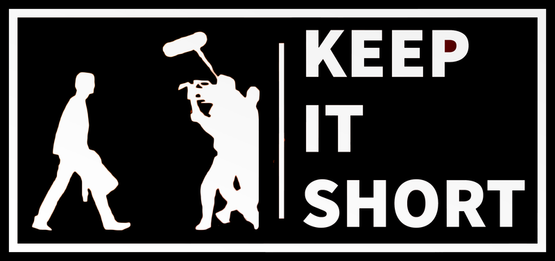

Etudiante en Master Marketing Digital à Audencia, je suis une personne curieuse qui se passionne vite et aime se lancer dans de nouveaux projets !
Vous pouvez aussi consulter mon CV détaillé sur LinkedIn :
Mon profil LinkedIn2018-2022: Programme Grande Ecole à Audencia Business School
Formation générale à la gestion des entreprises
Master en Marketing Digital
07/2020 - 12/2020 : Assistante chef de produit Marketing Digital au Huffpost
01/2020 - 06/2020 : Assistante Marketing Digital (Acquisition, Partenariats, WebAnalytics) chez France Billet / Fnac Spectacles
06/2019 - 08/2019 : Stagiaire IT & Marketing chez Norauto Argentina (Buenos Aires)
De novembre 2018 à novembre 2019, j'étais responsable de l'organisation d'un festival de courts-métrages avec une équipe de 5 personnes.
Les éditions précédentes n'avaient pas rencontré un franc succès, c'est pourquoi nous avons décidé d'être plus ambitieux et de tout changer: la date, le lieu, le public visé, les courts-métrages sélectionnés, etc.
Le festival s'est ainsi déroulé au Katorza, un cinéma emblématique de Nantes, et a intégré des courts-métrages provenant d'étudiants des meilleures écoles de cinéma et d'animation.
